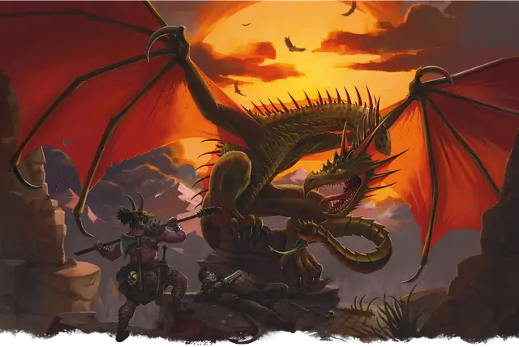

Виверна
Wyvern
Большой Дракон, без мировоззрения

Класс Защиты 14 Инициатива +0 (10)
Хиты 127 (15к10 + 45)
Скорость 30 футов, Полёта 80 футов
| мод | спас | ||
|---|---|---|---|
| СИЛ | 19 | +4 | +4 |
| ЛОВ | 10 | +0 | +0 |
| ТЕЛ | 16 | +3 | +3 |
| мод | спас | ||
|---|---|---|---|
| ИНТ | 5 | −3 | −3 |
| МДР | 12 | +1 | +1 |
| ХАР | 6 | −2 | −2 |
Чувства Тёмное зрение 120 футов, пассивное Восприятие 14
Языки нет
Опасность 6 (2 300 опыта; БВ +3)
Действия
Мультиатака. Виверна совершает одну атаку Укусом и одну атаку Жалом.
Укус. Бросок рукопашной атаки: +7, досягаемость 5 фт. Попадание: 13 (2к8 + 4) Колющего урона.
Жало. Бросок рукопашной атаки: +7, досягаемость 10 фт. Попадание: 11 (2к6 + 4) Колющего урона плюс 24 (7к6) урона Ядом, и цель Отравлена до начала следующего хода виверны.
Бонус мастерства +3
Среда обитания Горы, Холмы
Сокровища Любые
Виверна
Драконоподобный охотник с ядовитым жалом
Виверны — это драконоподобные хищники, которые нападают как из засады, так и с воздуха. Территориальные охотники, они атакуют добычу с помощью клыков и жала на хвосте. Жало виверны сочится болезненным и смертельным ядом, который страшит охотников на чудовищ, но прельщает алхимиков.
Виверны крайне агрессивны и занимают значительные территории вокруг своих логовищ в горах, на утёсах и внутри развалин. Несмотря на свою немалую силу, они предпочитают охотиться на лёгкую добычу — скот или группу разбивших лагерь путников. Как правило, виверны спускаются на землю лишь для того, чтобы прикончить уже отравленную или ослабленную нападениями с воздуха жертву. Существа, которым удаётся дать отпор или организованно отступить, могут вздохнуть с облегчением — скорее всего, эти ящеры отправятся искать более лёгкую добычу.
После того, как виверны обезвредят жертву, они уносят её в пещерное логово, чтобы сразу съесть в безопасности или сохранить блюдо про запас. Хотя большинство виверн редко собирают сокровища, их логова завалены вещами прошлых жертв. Иногда они уносят вместе с добычей сундуки, телеги, а порой и небольшие суда.